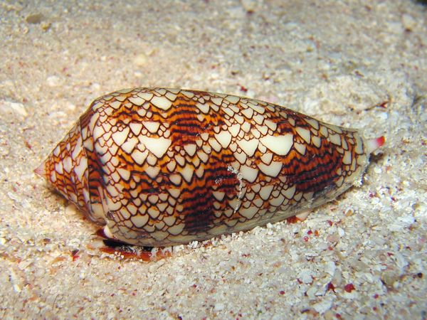
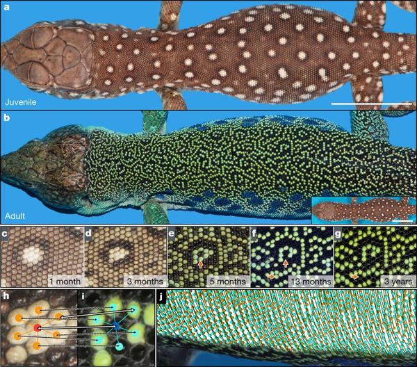

Below is a simple demonstration of one-dimensional cellular automata. The basic idea is that we have a row of cells. Each cell can be off (0) or on (1).
Each "neighborhood" of 3 cells determines the state (0 or 1) of the cell below it. Since there are 8 possible outcomes for 3 cells, 2 options each (2^3), there are then 2^8 = 256 possible rules for how the cells evolve. Each rule is represented by a number from 0 to 255 which we can turn into an 8-digit number of 1s and 0s to describe the rule.
Enter a number 0-255. You can choose whether to start the first row with only one "on" cell or a random set. Click "go" and see what happens!
For more information see here.
What I love about this is the simplicity of the rules and how unexpected the resulting images are. Why does this happen? How can one tiny change, say from rule 29 to rule 30, disturb the resulting image so much? There is something very beautiful about this complexity arising from such simple rules.
See below for examples of cellular automata found in nature.
Do sea snails and lizards code?

